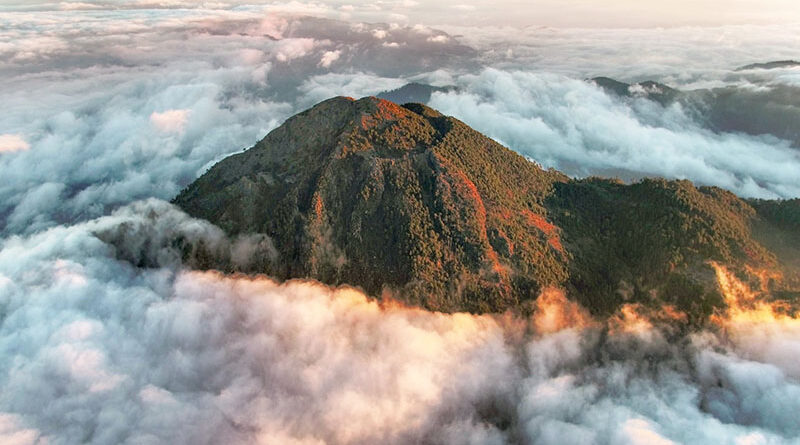

San Marcos es un departamento en Guatemala conocido por su diversidad geográfica, clima variado y rica producción agrícola. También es famoso por su artesanía, especialmente los tejidos de lana, y por ser un destino turístico que ofrece desde volcanes hasta playas y aguas termales.
La ciudad de San Marcos, su capital, es un centro cultural y comercial importante. Además, el departamento alberga varios parques nacionales y áreas protegidas que son hogar de una rica biodiversidad.
Historia:
El departamento de San Marcos fue fundado en 1873, cuando se separó de la provincia de Guatemala. La primera iglesia que se erigió en el lugar estaba dedicada a San Marcos Evangelista. Fue gracias a este hecho que el departamento recibió su nombre.
Ubicación Geográfica:
El departamento de San Marcos se encuentra en el oeste de Guatemala, en la región de los Altos. Limita al norte con el departamento de Huehuetenango, al este con Quetzaltenango y Totonicapán, al sur con Retalhuleu y al oeste con el departamento de Chiapas en México. Su capital es la ciudad de San Marcos.
Conoce estos lugares que te recomendamos visitar si viajas a San Marcos:
1 / 5
San Rafael Pie de la costa
San Rafael Pie de la Cuesta es un reconocido municipio de San Marcos que destaca por sus bellos paisajes y sus vistas panorámicas. En este destino se encuentra el Refugio del Quetzal, distintas cascadas, parques ecológicos y miradores que merece la pena conocer.
2 / 5

Volcán Tacaná
El volcán Tacaná es un destino turístico que ofrece vistas impresionantes de la región. Es un volcán activo que se encuentra en la frontera entre Guatemala y México, y es conocido por su belleza natural y su biodiversidad. Los visitantes pueden disfrutar de actividades como senderismo, observación de aves y exploración de la flora y fauna local.
3 / 5
Volcán Tajumulco
El volcán Tajumulco es el pico más alto de Centroamérica, con una altitud de 4,220 metros sobre el nivel del mar. Es un destino popular para los amantes del senderismo y la aventura, ofreciendo vistas espectaculares desde su cumbre. Los visitantes pueden realizar excursiones guiadas para explorar sus laderas y disfrutar de la belleza natural de la región.
4 / 5
Palacio Maya
El Palacio Maya es un sitio arqueológico que ofrece una visión fascinante de la antigua civilización maya. Los visitantes pueden explorar las ruinas, aprender sobre la historia y la cultura de los mayas, y disfrutar de la belleza natural que rodea el lugar. Es un destino ideal para aquellos interesados en la arqueología y la historia.
5 / 5
Parque Regional Municipal Astillero
El Parque Regional Municipal Astillero es un espacio natural que ofrece actividades al aire libre como senderismo, picnics y observación de la fauna local. Es un lugar ideal para disfrutar de la naturaleza y relajarse en un entorno tranquilo. Los visitantes pueden explorar sus senderos y disfrutar de la belleza del paisaje.